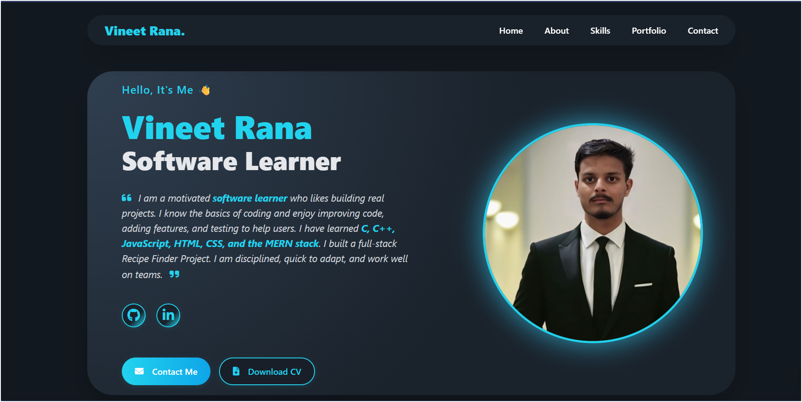
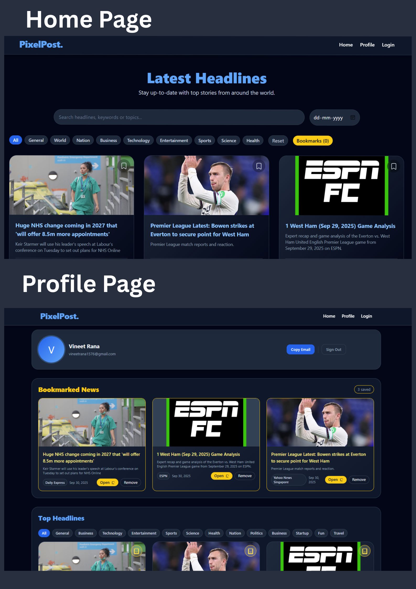

My Projects
Personal Portfolio Website
A modern, responsive website built to showcase my projects, skills, and experience as a developer. Features include a portfolio gallery, resume section, contact form, blog, and smooth animations.
Recipe Finder Website

A full-stack web app that helps users discover recipes from available ingredients using a public API. Features include search, images, instructions, filters, user accounts, favorites, and responsive design.
To Do List App

A simple, intuitive to-do list app using Local Storage for persistent tasks. Features include task creation, editing, completion toggles, deletion, filters (all/active/completed), and a clean responsive interface.
E-Commerce Product Page

A responsive product page showcasing product details, images, and add-to-cart functionality. Features include image gallery, pricing, responsive layout, accessibility considerations, and smooth interactions to demonstrate layout and UI skills.
Tic-Tac-Toe Game

A classic game built with an interactive UI and robust game logic, highlighting DOM manipulation skills. Features include responsive controls, score tracking, animations, difficulty levels, and clear win/lose feedback.
Daily-News-PixelPost
Daily-News-PixelPost is a fast, image-first news platform for quick visual storytelling, offering a clean responsive design, rapid publishing, headline templates, tagging, and social sharing—ideal for small newsrooms, indie journalists, and bloggers who want concise daily updates with strong visual impact.